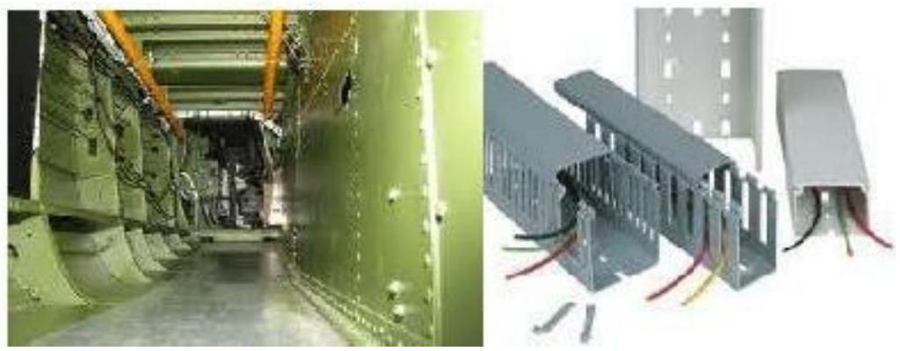

Accommodation of Electrical Services
ACCOMMODATION OF ELECTRICAL SERVICES IN BUILDING
The building design and structure accommodate electrical services by incorporating physical features that allows for the installation of electrical services. The main features that allow for the installation of electrical services in building are discussed below:
DUCTS AND CHANNELS
Duct - space within a building specially enclosed for the accommodation of services and allowing facilities for working and inspection.

The main purposes of ducting include to:
- Conceal the accommodated services and to facilitate inspection, repair and alterations/modifications of the housed services.
- Help to reduce noise in the building
- Protects the accommodated services from mechanical damage
Ducts for Small pipes or cables
- These may be formed in the floor or wall, or on the surface of the wall.
- The size of ducts depends upon the outside diameter of the pipe or cable and the number of services installed.
- Normally the outside diameter not exceeding 64 mm
Plant space
Plant space - area required for the accommodation of mechanical or electrical equipment or control gear required for the operation of services
Subway
Subway - a horizontal passage for the conveyance of services underground or below the bottom floor of the building which allows walking headroom for access.
Crawlway
Crawlway - passage for services similar to a subway but where there is insufficient headroom to stand upright.
Trench
Trench - horizontal passage for services below floor level where the access is by removable covers in the floor.
Wells
Wells - vertical space used for the accommodation of stairs or lifts or to allow natural light or ventilation
Casing
Casing - an enclosure formed over pipes or cables running on the surface of a wall or ceiling. Casing are usually for decoration but can also provide protection from impact or corrosion.
Chase
Chase - a recess cut in a wall or floor when building is over; it accommodates pipes or cables and is screed or plastered over.
Sump
Sump - pit for seepage, leakage and draining down of pipework that cannot be discharged by gravity to the drain and must be collected and pumped.
Flue
Flue - builders' work or metal passage to convey the products of combustion to an acceptable point for discharge to the atmosphere
Service core
Service core - zone extending vertically through high rise building containing vertical circulation, service ducts and other utility and sanitary provisions.
CONDUIT AND TRUNKING
Trunking - lightweight, usually sheet metal or PVC enclosure for the passage of air or cables
- Circular conduit systems are used to carry insulated cables and should last the service period of the building.
- The space occupied by the cable must not exceed $40 \%$ of the cross-sectional area of the inside of the conduit to allow for ventilation to remove the heat generated by cable resistance.
- Materials used are light- or heavy-gauge steel, depending upon exposure to damp or explosive fumes.
- The external conduit should be galvanized. Lug grip connections are used for light-gauge pipework and screwed joints for heavy-gauge pipework. Pipe sizes are 16, 20, 25 and 32 mm .
- PVC conduit, using solvent weld joints, is lighter and easier to handle and does not corrode but requires the cable to incorporate the protective conductor. Its upper temperature limit is $60^{\circ} \mathrm{C}$.
- Rectangular galvanized sheet steel or PVC trunking is used where largecable carrying capacity is needed. These must not be filled to greater than $45 \%$ of their cross-sectional area with cables.
- Surface-mounted trunking can be incorporated into the interior decoration and up to three separate cable compartments are used for different services, including telecommunications, computer, power and lighting cables.
- Trunking may be installed under raised timber flooring, within the concrete floor slab or screed, in a grid, branch duct or perimeter distribution arrangement. Outlets that are raised or flush with the floor are provided to suit either fixed or movable office layouts.
Downloaded by Patrick Ngobiro (pngobiro@gmail.com)
Important of Unified System of Services Distribution
- Most services can be run in common ducts except flammable liquids and gases
- The pattern of distribution of services is considered as a whole in relation to the building planning
- 3 different categories of services run having different requirements for patterns of distribution:
- Wells and flues
- Pipes and ventilation trunkings
- Electrical cables
- Stair and lift wells run vertically through buildings. They do not required linkage with services at each floor level but prevent an obstacle to horizontal distribution of other services
Several factors to consider in deciding the size of ducts and recess:
- Number & size of pipes, cables & trunkings to be accommodated
- Any critical spacing or fixing position which must be followed for certain pipe types
- Clearance required for placing the pipes in position, which must also allow for ease of removal should it become necessary during maintenance
- Clearance to allow for position of fixings and to permit jointing
- Allowance for additional services which may be needed
- Space for access in the case of ducts
- Space of valve, dampers
- Space for expansion bands in long, straight horizontal or vertical ducts
- Space for branching and service junctions, and to carry these branches past adjoining services
Manholes:
Manholes: small covered opening in a paved area/building allowing access beneath, especially one leading to a sewer.
- They are used to carry out inspection, cleaning and removing obstruction in the sewer line or ducted services.
- Manhole allows joining of sewers or changing the direction of sewer or alignment of sewer or both.
- They allow the escape of considerable gases through perforated cover and thus help in ventilation of sewage.
- They facilitate the laying of sewer line in convenient lengths.